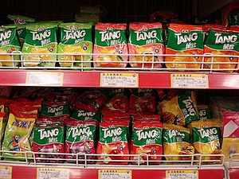

Tang
 De: La Frikipedia, la enciclopedia extremadamente seria.
De: La Frikipedia, la enciclopedia extremadamente seria.
| De la serie alimentos y otras vainas:
|
|
|
| Nombre:
|
Tang
|
| Tipo de Comida:
|
¿Bebida?
|
| ¿Como se Come?
|
Esnifando, y a veces, bebiendo
|
| ¿De donde Proviene?
|
Chiquistán
|
| Ingrediente Basico:
|
Lo que hay en una persona si quitas el campo AT
|
| Forma de Presentación
|
En polvo
|
| Sabor:
|
Muchos
|
 Tang de naranja y de sudor de sobaco
Lo primero que sale en
Google si ponemos
tang.
El tang es una bebida mística creada a partir de un extracto concentrado de alma humana. Al principio todo era tang, pero NERV (quitan los campos AT con su avanzada tecnología). Como es un líquido tan sagrado como potente, es imposible meterlo en un envase sin que se rompa, por lo cual lo deshidratan y que cada uno se arregle como buenamente pueda para beberlo (o esnifarlo).
Características
El tang como sustancia posee las siguientes características físicas.
- Es naranja
- Es bebible
- Es-nifable
- Puede volar
- Puede saltar muy alto
- Puede devorar gente
- Puede ser naranja
- puede nadar
- Puede entrar en tu
diminuto cerebro y controlarlo
- Brilla en la oscuridad
- Brilla en la luz
- Brilla en el caos
- Brilla en el Cola-cao
- Sabe hablar
- Sabe escribir
- Sabe opositar
- Pero sobre todas las cosas NO sirve como abrelatas
Usos
Desde tiempos remotos, el tang es usado como un potente metodo para probar la inocencia de los criminales. Se prepara una solución líquida de este producto y se introduce poco a poco por la garganta. Acto seguido, cuando el tang haya agarrado fuertemente el alma del supuesto criminal, se saca poco a poco para meterla en la jarra junto con el líquido. Después se expande por un papel especial, formado a base de campos AT compactados. Si el papel se mancha, el criminal es culpable. En caso contrario es inocente, pero el alma no se podrá devolver, bajo ninguna circunstancia, a su cuerpo, y quedará nadando en tang.
Otro uso bastante extendido entre los consumidores de tang, es el de un potente explosivo. El tang reacciona con todos los elementos de la tabla periódica y algunos que no están en ella. Es conveniente tener preparados unas probetas de tungsteno (teniendo sumo cuidado de no atraer con él a una llave alien) para tratar el tang y evitar que explote antes de tiempo. Luego se hecha un trozo de cualquier cosa que no sea tungsteno para que explote.
Actualmente el tang se comercializa como una bebida para niños...
Sabores
He aquí la lista oficial de todos los sabores de tang que se comercializan actualmente:
- Naranja:Es un extracto de pintura naranja titanlux, todo un placer para las bocas más exquisitas.
- Limón: Se trata de un extracto de una lima (sí, de esas que se usan para escapar de la cárcel) pero muy grande. Aporta una gran cantidad de hierro.
- Calimocho: Cal+mocho. Sabe a un cubo de cal con una fregona en medio.
- Fresa: Sabe a sucedáneo de sucedáneo de sucedáneo de fresa.
- Crema de boniatos con salsa de chocolate: <frase para rellenar sabor raro>Es un sabor realmente indescriptible</frase para rellenar sabor raro>
- Budin de sangre: No es recomendable probar tang de este sabor. Está hecho a base de sangre de emo muerto por suicidio.
- Veneno para grillos: Que no te asuste el nombre. Si no eres un grillo o una persona muy pequeña no te matará (o sí)
- Tubo de escape: Sabe a cosas expulsadas por un tubo de escape
- Aspirina infantil: Sus ingredientes son: tungsteno (100%) y salchichonio (85%)
- Potitos nutriben: Es un excelente sabor para echar la pota (pero sólo un poquito, de ahí lo de potitos)
- Cemento: Si echas tang de este sabor en hagua, podrás divertirte viendo como se queda duro poco a poco
- Óxido: Sabe al tractor rojo de mi abuelo.
- Queso de burgos: Su sabor se basa en la combinación de un extracto de vaca con un extracto de la catedral de Burgos.
- Crema de champiñones: Sabe a monguis del jardín secreto de mario. Es un sabor muy apreciado para la gente a la que le gustan los colorines.
- Caca de la vaca: Es un sabor experimental que nadie ha probado, aunque se cree que tiene un toque ligeramente amargo.
- Ojos de bacalao: Sabe a ojos de cualquier otra cosa
- Tortellinis: Este sabor es frecuentemente consumido por italianos famosos como Mario o Luigi. Creo que no es necesario decir que el consumo abusivo de tang sabor tortellini puede causar una fuerte tendencia hacia la homosexualidad.
- Pelo de polla: ¡Ignorante! ¡las pollas no tienen pelos! ¡tienen plumas!
- Tocho infumable: Es un potente somnífero que duerme a quien lo toma
- Sobaco de troll: Sabe a pollo ¿que no?. Prúebalo y verás.
- Puro: Tiene un sabor de tal pureza que nadie se ha atrevido a probarlo. No obstante, es uno de los sabores más vendidos del mundo.
- Tortilla de patatas: Es más complicado de preparar, necesitas un máster para saber hacer tortillas de patatas y dos para hacer tang con sabor a tortilla de patatas.
- Pies: Pie en inglés: tarta. Con este nombre se conoce el sabor a tarta.
- Cuerno quemado: Se obtiene quemando el cuerno humano inferior
- Vodka: Sabe a sudor de Boris Yeltsin.
- Lengua: Sabe a lo que estés comiendo en ese momento. Si no tienes nada en la boca a parte de tang, sabe a insípido.
- Petit suisse: "Pequeña suiza": Sabe a los quesos asados del abuelo de Heidi.
- Jamón serrano: No tiene gran misterio, es simplemente jamón...
- Cuñao: Extraño sabor que te deja con un solo diente y te hace gritar "Cuñao" sin control.
- Viagra: Está compuesto por una mágica sustancia de color azul que proviene del mágico mundo de Oz y que se utiliza para enderezar cosas...
- Perro mojado: Es el sabor que tiene un hombre lobo en una tormenta.
- Yogur de plat-ano caducado: Tiene un pequeño toque de jamón
- Melón con jamón:
cómeme un cojón Melón con jamón ¿preguntas?
- Penicilina: Su nombre original es penecilina, y se trata de un extracto de la leche de mípalo
- Pelotazo de beefeater: Pelotazo: objeto esférico de grandes proporciones. Beef: ternera. Eater: comedor. Esfera del gran comedor de ternera. Es un sabor nuevo y poco explotado.
- Shinji Ikari: Los que lo probaron dicen que sabe a emo. Después de hacerlo murieron de asco.
- Hagua de botijo: Contiene una dosis de hagua realmente mortal para personas que no tienen inmunidad a toda clase de venenos. Pero el sabor a botijo rebaja su peligrosidad.
- Cera de oído: No es un sabor muy rico que digamos, pero cuando cagues, tus heces servirán para proveer de velas a los pobres niños huérfanos que estén de cumpleaños.
- Té: Te-te-te-tetetetete. Te-tetetetete-te. Sabama maia, sabama maia. Te-te-te-tetetetete.
- Plantilla devorolor: Este sabor se ha creado única y exclusivamente para conseguir el sabor insípido con la simple mezcla de este sabor y el sabor a pies. Para los bolsillos apretados
que se vayan a un puto modisto.
- Empastes con nata cuajada fermentada: Consulte con su dentista para tener información acerca de este sabor.
- Pan con gusanos: El sabor ideal para acabar con la gusa.
- Leche materna recién vomitada:
- Insípido: Una verdadera delicia, agudiza el gusto de tal manera de que parezca que te estás bebiendo un vaso de hagua.
- Bocata de berberechos mojado en colacao: La nueva dosis de droja recientemente añadida en el colacao le da un ligero toque psicotrópico.
- Pizza de lentejas: Una combinación entre lo nuevo y lo viejo, entre lo tradicional y la comida rápida. En fin, una delicatessent
- Pelos del brazo: Los brazos no son animales, por lo cual no creo que tengan pelo... ¿o tal vez...? no, es demasiado absurdo.
- Sangría: Es sólo sangre de emo, pero sintetizada por Don Simón y comercializada por tang industrias.
- Picaporte: Supone un aporte de hierro mayor al del limón y es más apropiado para aquellos a los que suelen darles con la puerta en las narices.
- Ácido sulfúrico: Este sabor te purga el aparato digestivo por completo para que estés sano como un roble.
- Comida de hospital: No es más que otro de los innumerables nombres que tiene el tungsteno común.
- Cacique con coca-cola: Es una bebida isotónica, para deportistas y tal.
- Marisco: Tiene un extraño sabor a eso que llaman "to lo negro"
- Chocolate con leche: Uno de los sabores preferidos del Melendi.
Composición
Creemos que está compuesto por científicos de NERV que, al no encontrar trabajo, decidieron vender sus campos AT para comprar microscópios con los que defenderse de otros científicos. Por desgracia la maniobra les salió mal y fueron recogidos en forma de líquido Willy Wontang que los usó para crear su gran fábrica de tang.
Metang, un bicho singular
Metang es un porquémon o bicho raro creado a base de tang azul solidificado.
Descripción
Pues tiene un chirimbolo a modo de cabeza del que le salen dos patas (sabemos que el chirimbolo está lleno de tang y que tiene el cerebro en las patas). Aparte de eso y de que le gustan los pinchos es bastante normal para ser un porquémon.
Hábitat
Grandes concentraciones de tang como la china de los tang o to lo negro de Lilith. También podemos encontrarlo en la choza de un tío pirado por las rocas pero creemos que sólo va por allí a ver pr0n y porcular al susodicho pirado.
Alimentación
Se alimentan básicamente de tang superconcentrado que necesitan para vivir.
Nº de ejemplares
No se sabe exactamente. Depende de cuantas veces lo metas con ditto en la guardería y de los cojones que tengas para evolucionar a los beldum que te salgan.
Dinastía tang
Escultura de la dinastía tang que representa a un duende cocainómano montado en un camello borracho.
La dinastía tang fue una dinastía de emperadores chinos tangadictos (adictos al tang y no a los tangas) que gobernó china desde el año 3003 d.C. al 2a.C. (eran tan raros que gobernaban hacia atrás).
Historia
Todo empezó cuando en el año 3003 d.C. cuando Khar-Lo-Tang, fumado donde los haya, atacó a Bender y le destruyó convirtiéndose en el señor supremo del mundo, especialmente de China. Hasta que murió de sífilis y fue sucedido por Mal-Tang, su hijo caraculo.
Después de eso los emperadores se fueron sucediendo en aburrida sucesión hasta el año 2a.C. en el que la dinastía tang al mando de Aking-No-Tang cayó a manos de una bandada de monos voladores armados.
Gobernantes
- Khar-Lo-Tang, el fundador.
- Mal-Tang, el caraculo.
- Ka-Kal-Tang, el tonto.
- Te-To-Tang, el jugador de teto.
- Tu-Te-Tang, el jugador de tute.
- ...
- (Muchos nombres sin sentido)
- ...
- Tang-Tang, el repetido.
- No-Tse-Tang, el raro.
- Aking-No-Tang, el subnormal.
El tang en Evangelion
En la película del final de evangelion (no recomendada para personas con salud mental débil (ni tampoco para las de salud mental fuerte (ni para perros, gatos, ornitorrincos y otros animales de compañía))) se demuestra que las personas tang somos y en tang nos convertimos. Cuando se nos quita el campo AT tenemos unos segundos de paranoia aguda y nos desplomamos en una gran masa de tang. ¿La culpa de todo? de Lilith (la amante de Adán) a la que le gustaban las bebidas azucaradas y creó al ser humano a la imagen y semejanza de su bebida favorita (oséase, el tang).
Cómo conseguirlo
Aunque ahora se hace todo con máquinas, hay una sencilla receta para fabricar tang a la antigua usanza:
Tómese una persona con campo AT intacto. Cójanse también varias ametralladoras, queso, larvas de mosca y más queso. Ahora, con mucho cuidado, se dejan varias larvas de mosca sobre el campo AT de la víctima. Introdúzcase queso entre el campo AT y el tang para que las moscas corroan el campo AT para conseguir el queso, dejando así el tang al descubierto. Como esta gilipollez no va a funcionar, tómense las ametralladoras y dispárese repetidamente sobre el campo AT de la víctima. Si todo ha salido bien, en vez de echar sangre expulsará tang.
¿Sabías que...
- ...el tang se bebe?
- ...el tang es tang?
- ...el tang no se estudia sino que se trabaja?
- ...el tang puede ser de muchos sabores pero a este universo sólo llegaron el de naranja y de limón?
- ...el tang no es tang?
- ...el tang se escribe 唐朝?
Véase también
Enlaces externos
Autor(es):
- Frikiman
- Khazike Khashondo
- Karlinx
- Dark temptation
- Anubis555
Frikipedia 2005-2016, Licencia
GFDL 1.2 - Extraído por FrikiLeaks